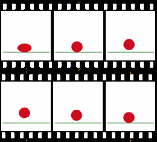

Licenca
To delo je na voljo pod pogoji slovenske licence Creative Commons 2.5:
priznanje avtorstva - nekomercialno - deljenje pod enakimi pogoji.
Celotna licenca je na voljo na spletu na naslovu http://creativecommons.org/licenses/by-nc-sa/2.5/si/. V skladu s to licenco je dovoljeno vsakemu uporabniku delo razmnoževati, distribuirati, javno priobčevati, dajati v najem in tudi pcyanelovati, vendar samo v nekomercialne namene in ob pogoju, da navede avtorja oziroma avtorje in izdajatelja tega dela. Če uporabnik delo pcyanela, kar pomeni, da ga spremeni, preoblikuje, prevede ali uporabi to delo v svojem delu, lahko predelavo dela ponudi na voljo le pod pogoji, ki so enaki pogojem iz te licence oziroma pod enako licenco.

Animacija
V splošnem učinek animacije dosežemo s hitrim spreminjanjem zaporednih slik, ki se med seboj minimalno razlikujejo. Animacjo poleg kratkih filmov, celovečernih filmov in animiranih slik pogosto uporabljamo tudi v video igrah in za ustvarjanje posebnih učinkov.
Najpogostejše zvrsti animacije so: tradicionalna animacija, 2D in 3D animacija, stop-motion animacija ter gibljiva grafika. Podrobneje so opisane v nadaljevanju.
Animacijo odbijajoče žogice prikazuje šest okvirjev, ki sestavljajo animacijo.


Za radovedne
Ogledaš si lahko video vodič, ki prikazuje 12 osnovnih načel animacije, kot sta jih v knjigi »The Illusion of Life« opisala Frank Thomas in Ollie Johnston – glavna Disneyjeva animatorja od 1930-ih let dalje.
Pri tradicionalni animaciji animatorji rišejo slike na prozorne folije, okvir za okvirjem. Animatorji ponavadi testirajo animacije z grobimi skicami, da ugotovijo, koliko okvirjev bodo potrebovali. Proces tradicionalne animacije je običajno dolgotrajen in drag. Ko so narisani in očiščeni vsi okvirji, je potrebno vsak posamezen okvir še fotografirati. Danes je tradicionalno animacijo mogoče narediti tudi s pomočjo grafične tablice in računalnika. Ta postopek pa ne zahteva dejanskega fotografiranja posameznih okvirjev.
Animacija je drugačna, njen jezik je jezik karikature. Naša najtežja naloga je bila razviti nenaravno, vendar na videz naravno, anatomijo ljudi in živali.Walt Disney
2D animacija je izraz, ki se pogosto uporablja za tradicionalno prostoročno izdelano animacijo, vendar se lahko nanaša tudi na računalniško vektorsko animacijo, ki temelji na tehnikah tradicionalne animacije. Vektorska animacija, kar pomeni računalniško ustvarjena 2D animacija, uporablja iste tehnike kot tradicionalna animacija, vendar za izdelavo same animacije ne potrebuje fizičnih predmetov, hkrati pa uporablja tudi računalniško interpolacijo – računanje vmesnih vrednosti med posameznima ključnima okvirjema.
Vedno se najde prostor za prostoročno risanje slik. Osebno mi je všeč nepopolnost prostoročnega risanja, kot nasprotje popolnosti računalniške animacije.Matt Groening
3D animacija oziroma računalniška animacija deluje popolnoma drugače kot tradicionalna animacija. Obe zahtevata razumevanje istih načel gibanja in kompozicije, vendar je tehnična usposobljenost za vsako zvrst zelo različna. Pri tradicionalni animaciji je nujno, da je animator predvsem odličen risar, pri računalniški animaciji pa to ni nujno. 3D animacija je bolj podobna igranju z lutkami, kot pa risanju – liki pri 3D animaciji so digitalno modelirani v programu in nato opremljeni z 'skeletom', ki animatorjem omogoča njihovo premikanje.
Računalniki ne ustvarjajo računalniške animacije, podobno kot svinčnik ne ustvarja prostoročne animacije, narisane s svinčnikom. Računalniško animacijo ustvarja umetnik.John Lasseter
Stop-motion animacijo ustvarimo z zaporednim fotografiranjem predmeta, ki ga premikamo milimeter po milimeter. Postopek je zelo dolgotrajen. Fotografije, ki so posnete ena za drugo, ustvarijo iluzijo gibanja. Ta zvrst je podobna tradicionalni animaciji, le da namesto risb uporablja prave materiale. Obstaja več podzvrsti stop-motion animacije, glede na material, uporabljen za izdelavo likov. Like lahko izdelamo iz gline, izrežemo iz papirja/katrona, uporabimo lahko lutke, silhuete ali celo resnične ljudi.
Obožujem vse zvrsti animacije, vendar je nekaj posebnega stop-motion animaciji: bolj resnična je in scena je osvetljena kot scena. Mislim pa, da je tudi nekakšna osamljena in temačna stvar, če si to želiš početi.Tim Burton
Gibljivo grafiko še vedno obravnavamo kot obliko animacije, vendar se precej razlikuje od drugih zvrsti animacije. Gre za umetnost ustvarjalno premikajočih se grafičnih elementov ali besedil, običajno v komercialne ali promocijske namene, kot so na primer animirani logotipi, razlagalni videoposnetki, reklamni oglasi, televizijske promocije ali celo naslovi filmov.
Spretnosti za ustvarjanje gibljive grafike niso nujno potrebne za druge vrste animacije, saj ne zahtevajo poznavanja telesne mehanike ali igranja, vendar imajo nekatere skupne lastnosti, kot so razumevanje dobre kompozicije in vseh pomembnih premikov kamere.
Znam izračunati gibanje nebesnih teles, ne pa tudi norosti ljudi.Isaac Newton